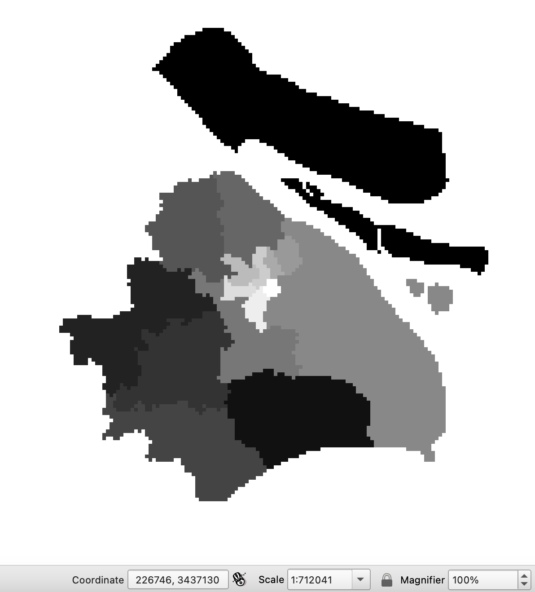
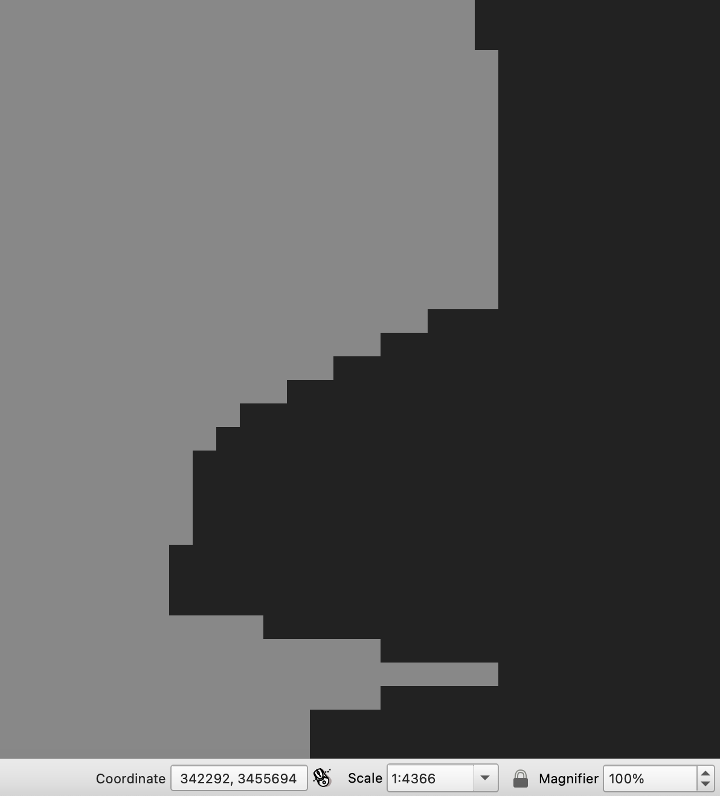
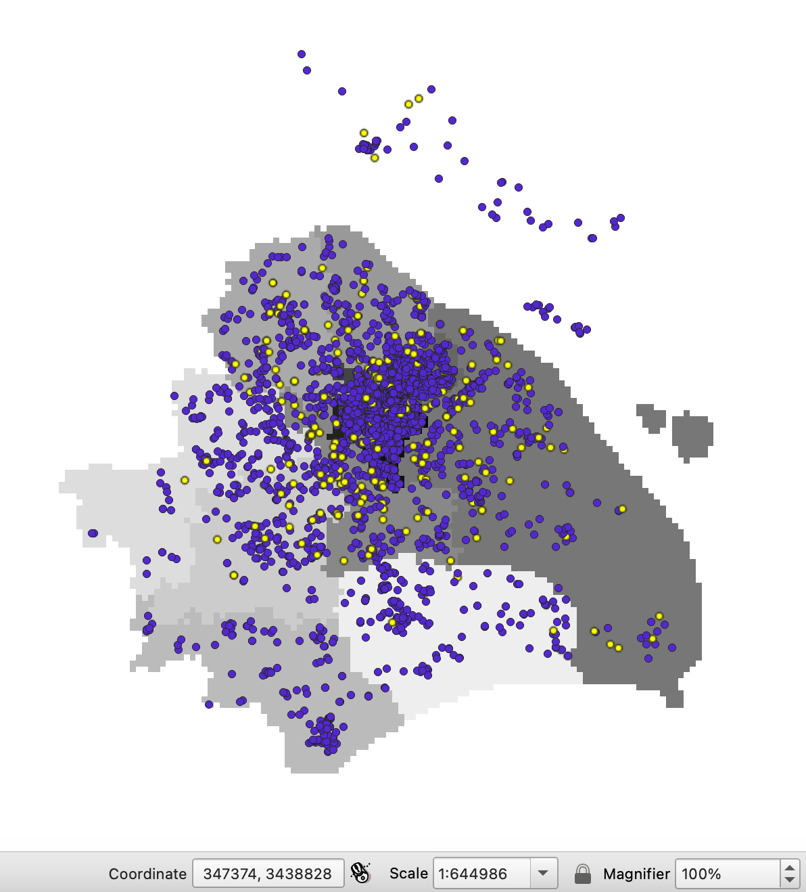
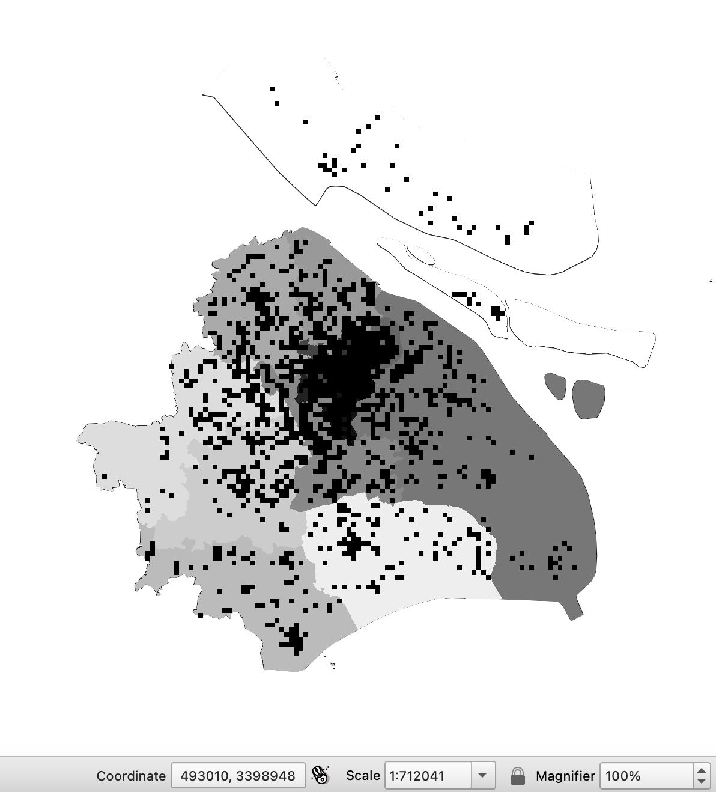

Lab 04 · October 2026
Right in Total, Wrong by District: What Four Cell Sizes Do to Shanghai
The question
How many square kilometers is Shanghai’s Putuo District, and how much does the estimate change with the projection, the cell size, and where the grid starts?
The data
- The survey.
LAB04_shanghai-lockdown-survey.csvholds 3,348 respondents from Shanghai's 2022 lockdown: district, neighborhood (Jiedao/town), a geocoded coordinate, and depression, anxiety, and food-insecurity scores. The file states no publisher, licence, or sampling design. - The encoding. QGIS guessed UTF-8 and garbled
Jiedao/townandGPS info. The file is GB18030, and nothing in it says so; I recovered that from the failure. - 553 gaps that look like data.
GPS infohas zero blank cells, but 553 rows (16.5%) read (空), "empty". They have no coordinate, so QGIS dropped them without comment: the point layer holds 2,795 of 3,348 respondents. - Precision is not accuracy. 2,494 coordinates print six decimals (about 0.10 m), yet 245 respondents sit in a different district from the one their records name, and eleven share one coordinate. Those 2,494 rows worry me more than the six coarse ones at 95 m: they claim a precision the file itself disproves.
- Addresses removed.
GPS infoonce held full postal addresses. They were removed before the file reached me, and the file doesn't say who removed them or on what authority. The coordinates stayed, and a coordinate to six decimals is still an address. I would also need to know what respondents agreed could be published; the file records none of it. - The boundaries.
LAB04_shanghai-districts.geojsonholds Shanghai's 16 districts from DataV.GeoAtlas (Alibaba, geo.datav.aliyun.com), with the official codes. It states no licence, accuracy figure, or contact, so I record its terms as not stated. Per the lab brief, the licensed alternatives (geoBoundaries, GADM) still list Nanhui, abolished in 2009: the accurate file has no license, and the licensed files are wrong. Thesurvey_codefield (1–16) was derived for the lab by joining points to polygons; it is not in the source.
The method
I conducted all spatial analysis in QGIS 3.44 LTR. I loaded the survey as a delimited-text layer using GB18030 encoding,
X = longitude, Y = latitude, EPSG:4326) and the districts as GeoJSON. At the
start, I recorded the project ellipsoid: WGS 84 (EPSG:7030), area in square meters.
Frames. I compared area($geometry), which is planar in the layer's own CRS,
with $area, which follows the project ellipsoid. I then exported the districts to GeoPackage
in four CRSs (EPSG:3857, 32651, 4549, 4547), ran area($geometry) on each and summed the
sixteen features with Basic statistics for fields. The geodetic total, 7,988.523 km², was supplied by the
lab. After that, everything used EPSG:32651 (WGS 84 / UTM 51N): the project CRS, the reprojected districts, and the reprojected survey points.
Consistency. I used Join Attributes by Location with the reprojected points as the base layer and
the reprojected districts, predicate are within, fields survey_code and
name_en, one-to-one on the first match. A mismatch field,
if(to_int("District") != "survey_code", 1, 0), flagged disagreements, and Basic statistics
for fields counted them. With the Measure Line tool, I measured eight flagged points to the nearest edge of
the district, as their record claims. I counted distinct coordinates to find shared ones.
Rasters. I used GDAL Rasterize (vector to raster) on the EPSG:32651 district layer, burning in the field
survey_code, output size in georeferenced units, cell sizes 1,000, 250, 100 and 30 m, NoData 0,
output data type Byte, each saved as a GeoTIFF. Every run used the same extent,
295000, 430000, 3393000, 3528000 [EPSG:32651] — 135 × 135 km, so the grids nest — with grid
origin 295000, 3528000. I read each run's time from the Log tab. Per-district areas came from Raster layer
unique values report (cells × cell size²), compared with the vector area in EPSG:32651. To compare
queries, I ran Sample raster values on the joined points against the 30 m and 100 m rasters (prefixes
r30_, r100_) and against the vector join. I also rasterized the survey points with
a fixed burn value of 1 at 1 km and 30 m. For the sensitivity check I reran the 1 km district raster with
the extent shifted half a cell, 294500, 430500, 3392500, 3528500.
The map
The four figures are framed to avoid identifying individual respondents. Figures 2 and 3 use zoom levels or scales intended to protect location privacy, and Figure 4 shows presence per 1 km cell, never an address.

survey_code, 1–16). Frame: EPSG:32651 (WGS 84 / UTM 51N);
grid origin 295000, 3528000.



What I found
Areas measured planar in EPSG:32651 (WGS 84 / UTM 51N), which departs from the ellipsoidal area by under 0.03 per cent at this latitude. Gridded areas were computed by cell count on grids from 1 km to 30 m, origin 295000, 3528000. Moving the 1 km origin by half a cell shifted a small central district's area by up to 9 points, so gridded figures are reported to no better than the nearest per cent.
Overall, the choice of projection changed the total area by 37% when I used the display projection, but had almost no effect when I used an appropriate local projection; the grid cost almost nothing in total and up to 11% in small districts at 1 km; and the survey contradicts its own district codes for 8.8% of respondents, which no cell size can fix.
The frame
| Frame | Total area, km² | Difference from geodetic |
|---|---|---|
| Geodetic, WGS 84 ellipsoid (supplied) | 7,988.523 | — |
| EPSG 3857, Web Mercator | 10,955.302 | +37.14% (predicted +36.6%) |
| EPSG 32651, UTM 51N | 7,986.346 | −0.03% |
| EPSG 4549, CGCS2000 GK CM 120E | 7,992.613 | +0.05% |
| EPSG 4547, CGCS2000 GK CM 114E | 8,089.649 | +1.27% |
Web Mercator overstated Shanghai’s area by 37.14%. Using the campus latitude from Lab 3 (31.162°), I had predicted an overestimate of about 36.6%,
31.162°, so one cosine at one latitude landed within 0.6 points of the whole-city result. UTM 51N cost
−0.03% and the right Chinese zone +0.05%. The wrong Chinese zone (CM 114E) cost +1.27%: 25–45 times a
correct zone, yet about 29 times better than Web Mercator. In QGIS, area($geometry) returned
0.0019 for Huangpu, in square degrees, which is not a unit; $area returned 20.37 km² under the
project ellipsoid.
My best estimate of Shanghai’s total area, 7,988.5 km², is 26% higher than the 6,340.5 km² reported in the statistical yearbook. This difference does not necessarily indicate an error. These are administrative polygons, so the extra ~1,650 km² is most plausibly coastal and estuary water that the yearbook's land figure excludes. Two valid definitions of "the area of Shanghai", both in use.
The file against itself
The point-in-polygon join found that 245 of the 2,795 respondents with coordinates (8.8%) fell within a district different from the one their record names. A misplaced boundary doesn't explain them. I measured eight to the nearest edge of their claimed district: 0.45, 0.50, 0.90, 1.4, 1.5, 1.8, 2.6 and 6.4 km (median 1.5 km), and seven of the eight are more than 500 m away. The lab brief gives the full-set figures: median about 10 km, 158 of 245 beyond 5 km, only 19 within 500 m. My sample matches the within-500 m share (1 of 8) but not the far tail (1 of 8 beyond 5 km, against 158 of 245), so it is not a representative draw. The conclusion holds either way.
The most frequently shared coordinate, 121.472644, 31.231706, is associated with eleven respondents whose records list eight different district codes (1, 4, 6, 7, 8, 11, 12, and 16). It falls in People’s Park in Huangpu, near the city center, suggesting that it may be a default geocoding location that was not flagged as such. In total, the 2,795 respondents have 2,663 distinct coordinates, with more than 120 coordinate pairs shared. For district-level analysis, I would use the self-reported `District` field and document its disagreement with coordinates for 245 respondents (8.8%), as well as the shared coordinate assigned to eleven respondents from eight districts. A field identifying how each coordinate was obtained—GPS, geocoded address, or fallback—would help determine which source to trust.
What the grid costs
| Cell size | Columns × rows | Cells | File size | Time, s (Log tab) |
|---|---|---|---|---|
| 1,000 m | 135 × 135 | 18,225 | 19.0 kB | 0.38 |
| 250 m | 540 × 540 | 291,600 | 293 kB | 0.34 |
| 100 m | 1,350 × 1,350 | 1,822,500 | 1.83 MB | 0.29 |
| 30 m | 4,500 × 4,500 | 20,250,000 | 19.7 MB | 0.46 |
Reducing the cell size from 1 km to 30 m increased the number of cells by a factor of approximately 1,111, consistent with the inverse relationship between cell area and cell count. File size rose roughly 1,000×; the fixed GeoTIFF header makes small files heavier than the law predicts. The shapefile of the same 16 polygons is about 61 kB, so the 30 m raster is over 300 times larger and holds less. High compression cut the 30 m file to about 271 kB, since it is mostly long runs of one district, but it must be decompressed to be queried, so the memory cost doesn't change. Run time barely moved (0.29–0.46 s across a 1,111× change in cells): at this size QGIS's fixed overhead swamps the work.
| Route | What it has to do | Time, s | Agrees with vector join |
|---|---|---|---|
| Vector join, no index | test 2,795 points against 16 polygons totaling 3,443 vertices | 0.30 | — |
| 30 m raster | two divisions and one array read per point | 0.40 | 2,794 of 2,795 |
| 100 m raster | two divisions and one array read per point | 0.33 | 2,789 of 2,795 |
The vector join took 0.30 seconds, compared with 0.40 seconds for the 30 m raster and 0.33 seconds for the 100 m raster. These results differ from the lab reference, in which the raster queries were faster. Since I recorded only one run for each method, the timings are not enough to establish a general performance difference. That is the opposite of the lab's reference (about 0.15 s vector, 0.03 s raster), and I did not reproduce its ratio. Each is a single run, and startup cost most likely swamps per-point work at 2,795 points. The grids did agree with the vector answer almost everywhere. A grid pays off when the same question is asked many times; I asked once, so my points fall on the vector side of the trade.
| Cell size | Cells in the grid | Cells with a respondent | Share |
|---|---|---|---|
| 1,000 m | 18,225 | 1,249 | 6.85% |
| 250 m | 291,600 | 2,228 (given) | 0.76% |
| 100 m | 1,822,500 | 2,475 (given) | 0.14% |
| 30 m | 20,250,000 | 2,568 | 0.01% |
Rasterizing the survey points reveals another limitation. At 30 m resolution, only 2,568 of the 20,250,000 cells contain a respondent, or about one in 7,900. The 20,247,432 unlit cells all read alike, so the grid cannot tell "nobody lives here" from "nobody was surveyed here". Only 2,568 cells light for 2,795 points because repeated coordinates share cells.
What each cell size stops you saying
| District | Vector, km² | 1 km | 250 m | 100 m | 30 m |
|---|---|---|---|---|---|
| Huangpu | 20.36 | −6.68% | −0.54% | −0.29% | +0.02% |
| Hongkou | 23.41 | +11.06% | −0.15% | +0.30% | +0.02% |
| Jing'an | 36.75 | +0.68% | −0.68% | +0.03% | +0.01% |
| Changning | 37.27 | −6.09% | +0.78% | +0.05% | −0.03% |
| Xuhui | 55.09 | −3.79% | +0.06% | +0.02% | +0.01% |
| Putuo | 55.54 | −2.77% | +0.04% | −0.11% | +0.02% |
| Yangpu | 60.46 | −4.07% | −0.86% | +0.12% | +0.00% |
| Minhang | 372.56 | +0.92% | −0.10% | −0.01% | −0.00% |
| Pudong New Area | 1,696.68 | +0.49% | +0.04% | +0.01% | +0.00% |
| Chongming | 2,101.73 | −0.08% | −0.06% | +0.01% | +0.00% |
| All sixteen | 7,986.35 | +0.01% | −0.03% | +0.00% | −0.00% |
Compared with vector areas in EPSG:32651, the summed area across all 16 districts differs by only 0.01% even at 1 km resolution. within 0.01% of the vector total. The districts are not fine: at 1 km, Hongkou is 11.1% too large and Huangpu 6.7% too small, and the errors cancel across neighbors. By 250 m every district is within 0.9%, by 100 m within 0.3%, by 30 m within 0.03%. The big districts (Minhang, Pudong, Chongming) stay within 1% even at 1 km. The error lives at the edge, so the rule I would carry to any feature is: a rasterized area can be off by roughly perimeter × cell size ÷ area, so a feature must be many cells across before its cell-count area means much.
| Cell size | Area of one cell | Smallest feature it could record | Something in Shanghai it erases |
|---|---|---|---|
| 1,000 m | 1.00 km² | A large neighborhood or urban district | Individual residential compounds in Pudong, such as those around Qiantan, merge into one coarse cell. |
| 250 m | 6.25 ha | A large residential compound or small urban block | Narrow lanes and small pocket parks around Qiantan become hard to tell from surrounding buildings. |
| 100 m | 1.00 ha | A small residential compound or large building complex | Individual buildings and small courtyards within a compound can vanish into one cell. |
| 30 m | 0.09 ha | A small building footprint or part of a residential block | Narrow alleys, small courtyards and the boundaries between adjacent compounds may stay unresolved. |
Residential compounds were the units through which the 2022 lockdown was administered, but they cease to appear as distinct features between 100 m and 250 m. A small one is about a single 100 m cell, many are smaller than a 250 m cell (6.25 ha), and none survives at 1 km.
Moving the grid
| District | Vector, km² | Grid A | Grid B | Swing |
|---|---|---|---|---|
| Huangpu | 20.36 | −1.8% | −6.7% | 4.9 points |
| Hongkou | 23.41 | +2.5% | −1.8% | 4.3 points |
| Jing'an | 36.75 | +3.4% | +6.1% | 2.7 points |
| Changning | 37.27 | −0.7% | +4.6% | 5.4 points |
| Xuhui | 55.09 | −3.8% | +5.3% | 9.1 points |
| Putuo | 55.54 | −4.6% | +2.6% | 7.2 points |
| Yangpu | 60.46 | −0.8% | +2.5% | 3.3 points |
Grid A begins at 295000, 3528000, while Grid B is shifted by half a cell; both use 1 km cells. This shift changed the estimated areas of the seven small central districts by 2.7 to 9.1 points. Xuhui went from −3.8% to +5.3%, and Putuo from −4.6% to +2.6%, from the same polygon in the same software. Neither run is wrong: which side of the true value a coarse raster lands on is set by an origin nobody chose, so it cannot be corrected, only bounded. A gridded area is a number and a band. I would not publish the average of two runs, since two can't show a spread; I would publish the band, or the vector area.
The Putuo figure I would publish
55.5 km², ±1%. That is the vector area in EPSG:32651 (55.54 km²), which the 30 m raster matches within 0.02%. The 1 km grid would have given about 53.0 or 57.0 km² depending on its origin, and Web Mercator would have inflated it by about 37%, the whole-city figure.
Written reflection
I would report Putuo’s area as 55.5 km² ± 1%, using the vector measurement in EPSG:32651 (UTM 51N). The 30 m raster differs from this value by only 0.02%. At 1 km resolution, the estimate changes to approximately 53.0 or 57.0 km² depending on the grid origin. Web Mercator would produce an estimate about 37% higher. These comparisons support using the vector area for reporting and treating coarse raster estimates with caution.
Based on the effects measured here, projection choice had the largest impact (+37.1% in Web Mercator), followed by cell size (up to 11% for a small district at 1 km) and grid origin (up to 9 points at 1 km), with the wrong Chinese zone last (+1.27%). The ranking flips with my choices: at 30 m both grid effects fall below 0.03%, under even the wrong zone. The source I could not rank is the boundary file's own positional accuracy. The GeoJSON states none, and nothing inside either file reveals it, so I could not have discovered it from the files at all.
These data problems could affect planning decisions based on district-level counts. The 553 respondents without coordinates (16.5%) cannot be included in the spatial join, which may lead to undercounting across districts. The 245 records whose coordinates conflict with their district codes may also shift cases from one district to another. For example, the shared coordinate in People’s Park places eleven respondents from eight districts—including Pudong, Jinshan, and Jiading—in Huangpu, increasing its apparent count while reducing counts elsewhere. A planner might use population-adjusted rates, but rates calculated from this join would still inherit both sources of error unless the problems were addressed.
What this does not show
This analysis covers the 2,795 respondents with coordinates rather than the full sample of 3,348. The 553 missing coordinates (16.5%) may not be missing at random, but the available data do not allow me to test this. Of the geocoded respondents, 245 (8.8%) have coordinates that conflict with their recorded district, and the file does not indicate which field is more reliable. I used the self-reported district code for district-level analysis, but could not independently verify it. The boundary file reports no licence, positional accuracy, or contact information. According to the lab brief, its vertex spacing is approximately 600 m (median 412 m), much coarser than the 30 m raster; thus, the raster grid is finer than the underlying boundary data can support. I did not measure vertex spacing myself. Finally, I shifted only the 1 km grid, so the ±1% reported for Putuo is a conservative reporting rule, not a measured variation at 30 m resolution.
I have not redistributed either source file. The survey is not public, and the boundary file has no stated licence. I have included derived statistics and map images, identified the source, and noted that its terms of use are unspecified. The figures are not zoomed closely enough to identify an individual respondent’s building.
AI use: I used Claude to help draft and edit the HTML and prose based on my notes and to check arithmetic. I independently recalculated the area differences, cell counts, and storage-scaling ratio against my notes. The measurements, tables, and interpretation are my own.